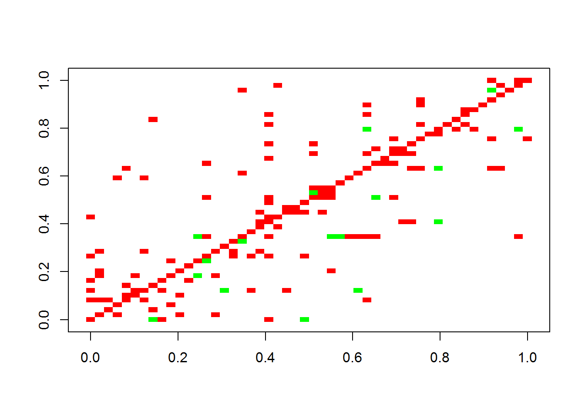
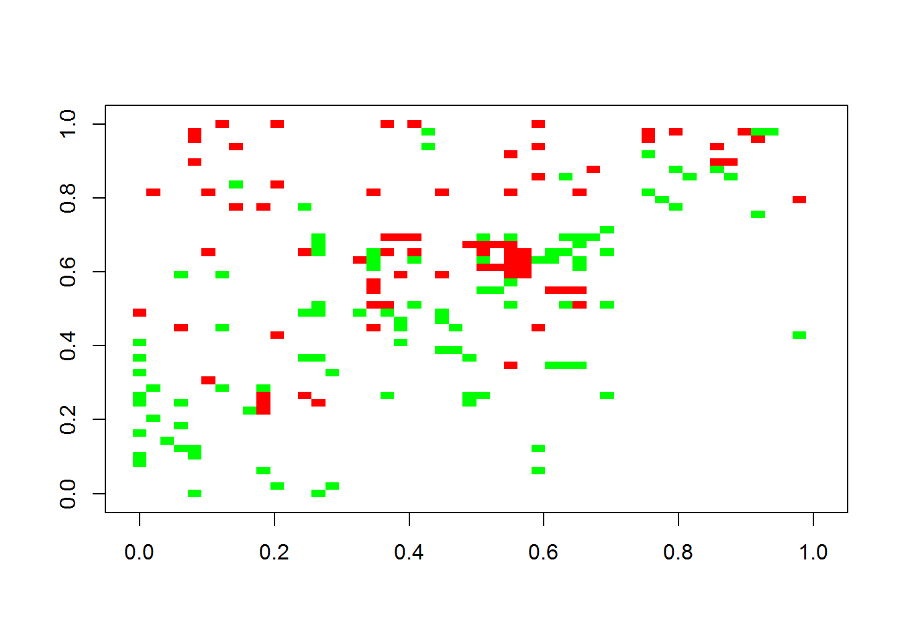

We start by loading the CoNetinR, vegan, seqtime and gdata libraries.
library(CoNetinR)
library(vegan)
library(gdata)
library(seqtime)The next step is to generate an interaction matrix, and from it, a dataset.
N = 50
S = 40
A = generateA(N, "klemm", pep=10, c =0.05)## [1] "Adjusting connectance to 0.05"
## [1] "Initial edge number 520"
## [1] "Initial connectance 0.191836734693878"
## [1] "Number of edges removed 348"
## [1] "Final connectance 0.0497959183673469"
## [1] "Final connectance: 0.0497959183673469"
## [1] "Initial edge number 172"
## [1] "Initial connectance 0.0497959183673469"
## [1] "Number of negative edges already present: 50"
## [1] "Converting 105 edges into negative edges"
## [1] "Final connectance: 0.0497959183673469"
## [1] "Final arc number (excluding self-arcs) 122"
## [1] "Final negative arc number (excluding self-arcs) 105"
## [1] "PEP: 13.9344262295082"dataset = generateDataSet(S, A)Next, we can use the CoNet adaptation to try and find back the original interaction matrix. We are going to use the Spearman method, and first get the Spearman scores.
scores = getNetwork(mat = A, method="spearman", T.up=0.2, T.down=-0.2, shuffle.samples=F, norm=TRUE, rarefy=0, stand.rows=F, pval.cor=F, permut=F, renorm=F, permutandboot=T, iters=100, bh=T, min.occ=0, keep.filtered=F, plot=F, report.full=T, verbose=F)
scores = scores$scoresWe also need to get the p-values.
pmatrix = getNetwork(mat = dataset, method="spearman", T.up=0.2, T.down=-0.2, shuffle.samples=F, norm=TRUE, rarefy=0, stand.rows=F, pval.cor=T, permut=F, renorm=F, permutandboot=F, iters=100, bh=T, min.occ=0, keep.filtered=F, plot=F, report.full=T, verbose=F)
pmatrix = pmatrix$pvaluesOf course, now we have the Spearman correlations and the p-values. We can turn that into an adjacency matrix.
adjmatrix = matrix(nrow = N, ncol = N)
adjmatrix[lower.tri(adjmatrix)] = scores
adjmatrix = t(adjmatrix)
adjmatrix[lower.tri(adjmatrix)] = scores
for (i in 1:N){
for (j in 1:N){
if (is.na(adjmatrix[i,j])){
adjmatrix[i,j] = 0
}
else if (pmatrix[i,j] > 0.05){
adjmatrix[i,j] = 0
}
}
}The adjacency matrix can be plotted with seqtime. The first figure is the original interaction matrix, while the second is the inferred matrix.
plotA(A)## [1] "Largest value: 0.474770147067311"
## [1] "Smallest value: -0.5"
plotA(adjmatrix)## [1] "Largest value: 0.808007530216377"
## [1] "Smallest value: -0.5"